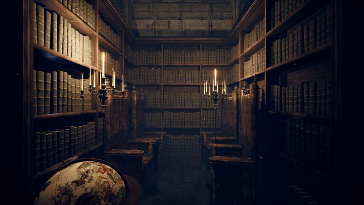
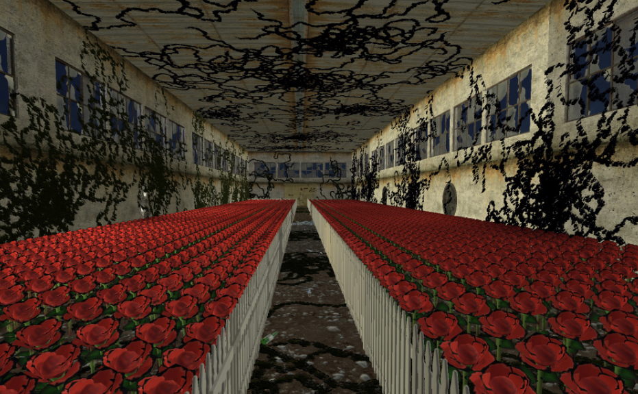
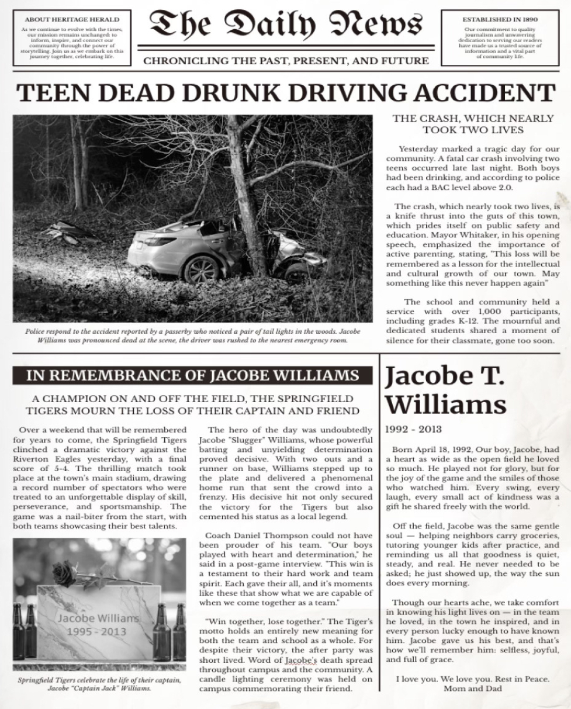

About the Story
Crash Loop follows a young man trapped inside a mysterious house. He must solve puzzles and move through a series of rooms while trying to understand why he is there.
Throughout the house, the player discovers objects, sounds, and memories that are connected to a drunk-driving accident.
The protagonist does not fully remember what happened. As he continues through the house, his fragmented memories slowly begin to return.
Main Characters
The Protagonist
The protagonist is trapped in a repeating cycle caused by his inability to accept what happened in his past.
He remembers celebrating with his best friend, drinking, and driving home, but much of the night remains hidden from him.
Jacobe
Jacobe is the protagonist's best friend. The two friends celebrated together before getting into a car and driving home.
Throughout the experience, memories of Jacobe help lead the protagonist closer to discovering the truth about the accident.
The Four Rooms
The player travels through four main areas. Each room contains a different puzzle and another part of the story.
- Library – Sort colored books in the correct order to unlock the door.
- Hallway – Find four hidden objects and use them to discover a number code.
- Rose Garden – Search through the garden to find a rusty key hidden among the roses.
- Final Scene – Escape the house and discover the truth behind the accident.
Important Clues
Environmental clues are hidden throughout the experience. Many of them appear unimportant at first but become meaningful when the truth is revealed.
- Bottles
- Photographs
- Objects hidden throughout the hallway
- Roses in the garden
- Voice-over recordings
- Sounds and whispers
- The newspaper
Every clue reveals another part of the protagonist's past.
The Loop
One of the most important ideas in Crash Loop is the repeating cycle.
When the player fails, the experience can begin again. The player may lose their progress, but they still remember what they learned.
The loop represents the protagonist's inability to accept the past and move forward.
The Final Reveal
After completing the rooms, the protagonist finally makes it outside the house.
Outside, he discovers a newspaper connected to the drunk-driving accident.
The newspaper reveals that Jacobe died in the crash.
At that moment, the clues found throughout the house begin to make sense. The experience was not simply about escaping the building. It was about the protagonist confronting a memory he had been unable to accept.
Main Themes
- Regret
- Loss
- Memory
- Addiction
- Consequences
- Acceptance
Gallery



Learn More
Learn more about the dangers of drunk driving from NHTSA .